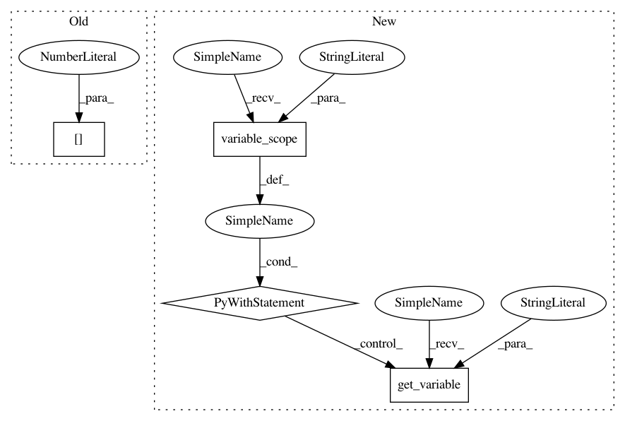

42efaa53edce9b84a98fef1fce24502e6d2ba941,texar/modules/encoders/transformer_encoders.py,TransformerEncoder,__init__,#TransformerEncoder#Any#Any#Any#,34
Before Change
self._hparams.embedding, embedding, vocab_size,
self.variable_scope)
embed_dim = self._embedding.shape.as_list()[1]
if self._hparams.zero_pad:
self._embedding = tf.concat((tf.zeros(shape=[1, embed_dim]),
self._embedding[1:, :]), 0)
if self._hparams.embedding.trainable:
After Change
self._embedding[1:, :]), 0)
if self._hparams.embedding.trainable:
self._add_trainable_variable(self._embedding)
with tf.variable_scope("enc_pe"):
if self._hparams.sinusoid:
raise ValueError("not implemented")
else:
self.position_enc_embedding = tf.get_variable("lookup_table",
dtype=tf.float32,
shape=[self._hparams.max_seq_length, self._hparams.embedding.dim],
initializer=tf.contrib.layers.xavier_initializer())
@staticmethod
def default_hparams():
Returns a dictionary of hyperparameters with default values.
The dictionary has the following structure and default values.
In pattern: SUPERPATTERN
Frequency: 3
Non-data size: 4
Instances
Project Name: asyml/texar
Commit Name: 42efaa53edce9b84a98fef1fce24502e6d2ba941
Time: 2017-12-08
Author: shore@pku.edu.cn
File Name: texar/modules/encoders/transformer_encoders.py
Class Name: TransformerEncoder
Method Name: __init__
Project Name: tflearn/tflearn
Commit Name: 4acd61442955baa2509fdc2961284c9d2a986f34
Time: 2016-07-01
Author: aymeric.damien@gmail.com
File Name: tflearn/layers/recurrent.py
Class Name: GRUCell
Method Name: __call__
Project Name: NVIDIA/OpenSeq2Seq
Commit Name: f791b89909d8ac69cac38610a4b1ed31d219920d
Time: 2018-08-01
Author: chipn@nvidia.com
File Name: open_seq2seq/encoders/lm_encoders.py
Class Name: AWDLSTMEncoder
Method Name: _encode